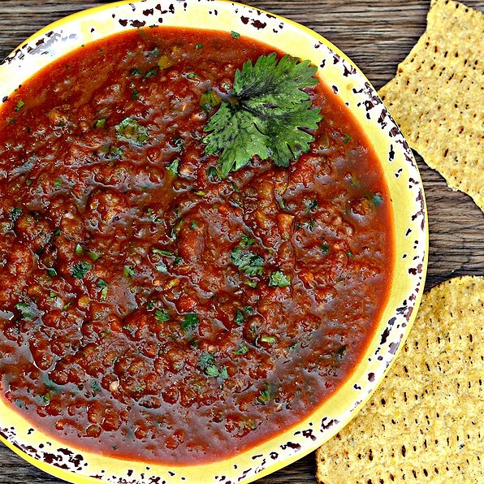

Classic Waffles
Description
A waffle is a dish made from leavened batter or
dough that is cooked between two plates that are
patterned to give a characteristic size, shape, and
surface impression. There are many variations based on the
type of waffle iron and recipe used.
Ingredients
- 2 cups all-purpose flour
- 1 teaspoon salt
- 4 teaspoons baking powder
- 2 tablespoons white sugar
- 2 eggs
- 1 ½ cups warm milk
- ⅓ cup butter, melted
- 1 teaspoon vanilla extract
Directions
- Step 1
In a large bowl, mix together flour, salt, baking powder and sugar; set aside. Preheat waffle iron to desired temperature.
- Step 2
In a separate bowl, beat the eggs. Stir in the milk, butter and vanilla. Pour the milk mixture into the flour mixture; beat until blended.
- Step 3
Ladle the batter into a preheated waffle iron. Cook the waffles until golden and crisp. Serve immediately.
Hatch Chile Salsa

Description
According to Cotanch, Hatch chiles' popularity stems
from their flavor more than their spiciness. ... Hatch chiles range
in heat level from mild–for those seeking just the smoky flavor–to extra hot,
which rivals the New Mexico sun on the Scoville scale (we assume).
Ingredients
- 5 Hatch chile peppers, stems removed
- 1 (28 ounce) can diced tomatoes
- 1 (14.5 ounce) can diced tomatoes with roasted garlic
- ½ onion, roughly chopped
- ¼ cup chopped fresh cilantro
- 1 pinch garlic powder, or to taste
Directions
Step 1
Set oven rack about 6 inches from the heat source and preheat the oven's broiler. Line a baking sheet with aluminum foil; add Hatch chile peppers.
Step 2
Cook under the preheated broiler until the skin of the peppers has blackened and blistered, 5 to 8 minutes. Place blackened peppers into a bowl and tightly seal with plastic wrap. Allow peppers to steam as they cool, about 20 minutes. Remove and discard skins.
Step 3
Blend roasted Hatch chile peppers, diced tomatoes, diced tomatoes with roasted garlic, onion, cilantro, and garlic powder in a food processor or blender until desired consistency is reached.